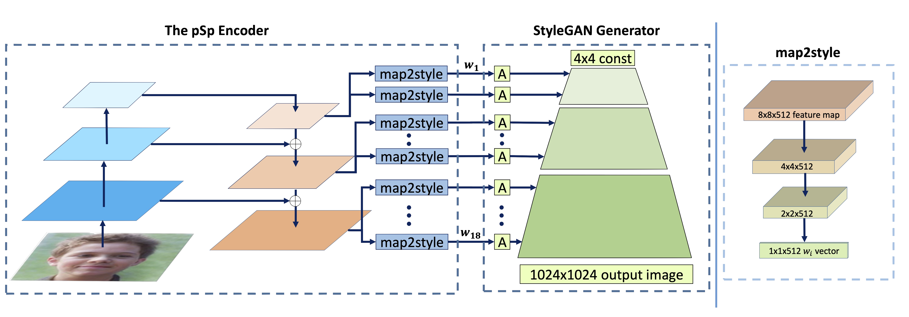
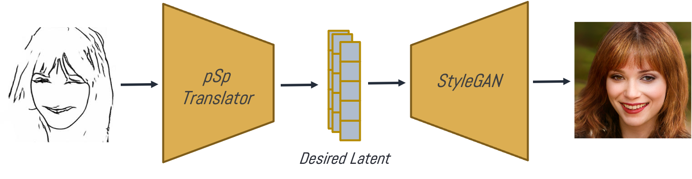
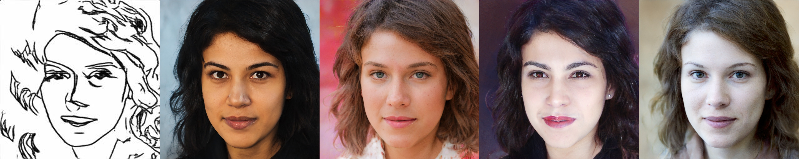
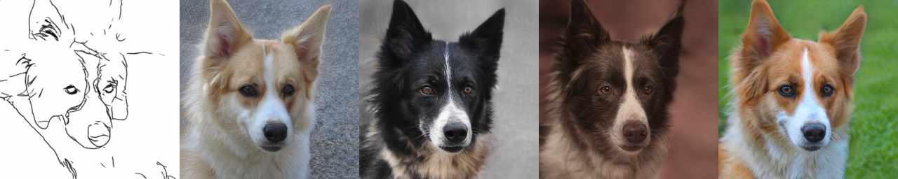

Abstract:
We present a generic image-to-image translation framework, pixel2style2pixel (pSp). Our pSp framework is based on a
novel encoder network that directly generates a series of style vectors which are fed into a pretrained StyleGAN generator,
forming the extended W+ latent space. We first show that our encoder can directly embed real images into W+, with no
additional optimization. Next, we propose utilizing our encoder to directly solve image-to-image translation tasks,
defining them as encoding problems from some input domain into the latent domain. By deviating from the standard invert
first, edit later methodology used with previous StyleGAN encoders, our approach can handle a variety of tasks even
when the input image is not represented in the StyleGAN domain. We show that solving translation tasks through StyleGAN
significantly simplifies the training process, as no adversary is required, has better support for solving tasks without
pixel-to-pixel correspondence, and inherently supports multi-modal synthesis via the resampling of styles. Finally,
we demonstrate the potential of our framework on a variety of facial image-to-image translation tasks, even when compared
to state-of-the-art solutions designed specifically for a single task, and further show that it can be extended beyond the
human facial domain.
Video
Overview
The pixel2style2pixel (pSp) framework provides a fast and accurate solution for encoding real images into the latent space of a
pretrained StyleGAN generator. The pSp framework can additionally be used to solve a wide variety of image-to-image translation tasks including
multi-modal conditional image synthesis, facial frontalization, inpainting and super-resolution.
We introduce an encoder based on an FPN where style vectors are extracted from different pyramid scales and inserted directly into a fixed, pretrained StyleGAN generator in correspondence to their spatial scales.
Notably, during inference, pSp performs its inversion in a fraction of a second compared to several minutes per image when inverting using optimization techniques.

Our key insight is that pSp can be applied to more general image-to-image translation tasks by directly encoding the input image
into the latent code corresponding to the desired output image. This allows one to manipulate images even when the input image cannot be
encoded into the latent space of the pretrained StyleGAN.

Translating images via intermediate style representation further allows one to leverage the rich latent space of StyleGAN. For example,
by resampling styles and mixing them with the original encoding we provide inherent support for multi-modal synthesis.


Results
Below we show animation results for each of the presented tasks. In each animation, we show the input image on the left
followed by the generated output on the right.
StyleGAN Encoding
Here, we use pSp to find the latent code of real images in the latent space of a pre-trained StyleGAN generator.
Face Frontalization
In this application we use pSp to generate a front-facing face from a given input image of an arbitrary pose.
Conditional Image Synthesis
Here we wish to generate photo-realistic face images from ambiguous sketch images or segmentation maps.
Using style-mixing on the fine-level styles, we inherently support mutli-modal synthesis for a single input.
Super Resolution
Given a low-resolution input image, pSp can generate a corresponding high-resolution image.
@InProceedings{richardson2021encoding,
author = {Richardson, Elad and Alaluf, Yuval and Patashnik, Or and Nitzan, Yotam and Azar, Yaniv and Shapiro, Stav and Cohen-Or, Daniel},
title = {Encoding in Style: a StyleGAN Encoder for Image-to-Image Translation},
booktitle = {IEEE/CVF Conference on Computer Vision and Pattern Recognition (CVPR)},
month = {June},
year = {2021}
}